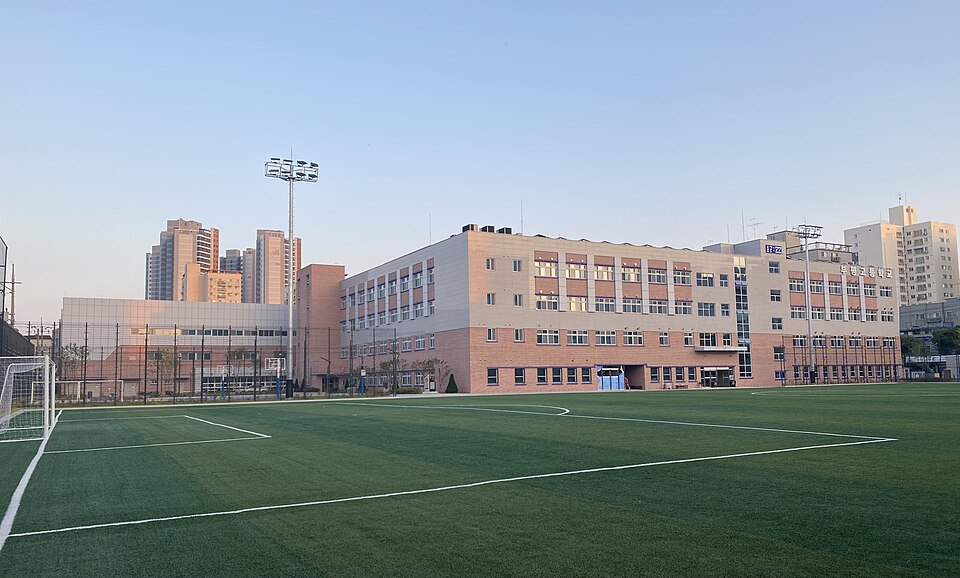
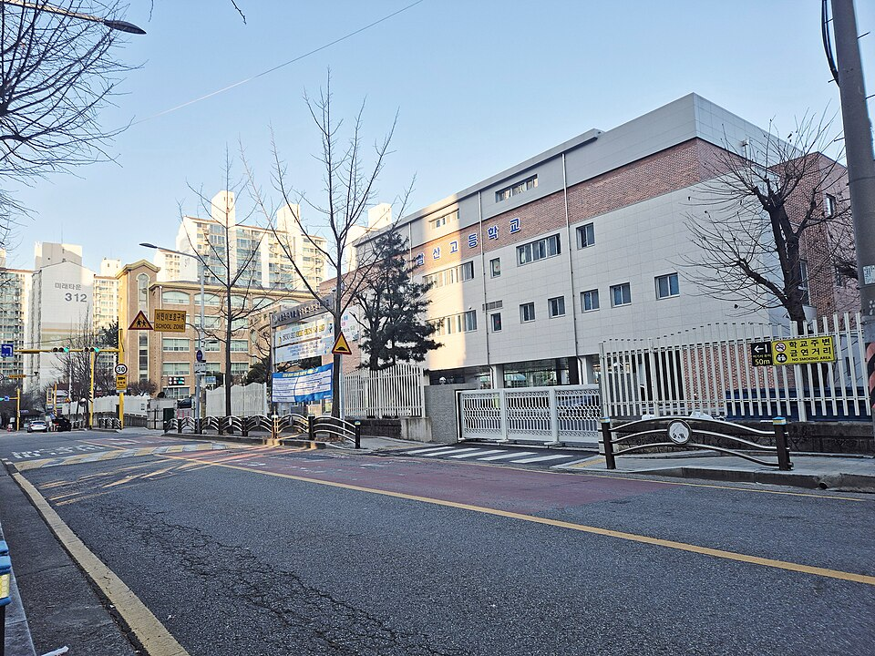

부평구는 인천에서 중·고등학교가 가장 촘촘하게 붙어 있는 지역입니다. 부평동 일대의 부평고·부평여고·부평중부터 삼산동의 삼산고·삼산중, 산곡동의 인천산곡고·산곡중까지 한 구 안에 41곳이 있습니다. 학교가 많은 만큼 시험 스타일도 제각각이라, 학원 진도보다 우리 아이 학교에 맞춘 수학과외·영어과외를 찾는 가정이 많습니다.
오늘은 부평구에 직접 찾아가는 선생님 중 두 분을 소개합니다. 한 분은 중1부터 고3까지 보는 15년차 수학 선생님, 한 분은 국어와 영어를 함께 잡아 주는 선생님입니다.
부평에서 고등 수학과외를 찾을 때 문·이과를 모두 볼 수 있는지가 관건입니다. 국립대 수학과를 나와 중1부터 고3까지 15년을 가르쳐 온 선생님이라, 학생 수준과 지금 필요한 게 무엇인지를 빠르게 파악하고 커리큘럼을 잡습니다.
내신 대비부터 수능 준비까지 이어지는 과정이 준비돼 있고, 모든 학생의 회차 관리 보고서로 진행 상황을 공유합니다. 부평동·삼산동 중고등 학생을 오래 관리해 온 만큼 그 일대 학교 시험 경향에 익숙합니다.
박ㅇ화 선생님 상세 프로필 →중등 영어과외와 국어를 한 분에게 맡길 수 있는 게 이 선생님의 장점입니다. 국어와 영어는 결국 글을 읽는 힘이 겹치기 때문에, 두 과목을 같이 보면 서로를 끌어올립니다.
수업 방식은 무조건 암기가 아니라 문제를 푸는 방법을 알려주는 쪽입니다. 학생을 휘어잡는 카리스마와 따뜻한 분위기를 같이 갖춰서, 하위권 학생의 동기를 살리는 데 강하고 상위권은 개별 목표에 맞춰 갑니다. 학생·학부모와 3자로 소통합니다.
강ㅇ식 선생님 상세 프로필 →
학교마다 시험 출제 경향과 수행평가 비중이 달라서, 학교별로 준비법을 따로 정리해 두었습니다.
👉 부평구 수학과외 선생님 · 부평구 영어과외 선생님 · 관리 학교 41곳 전체 보기
학년과 과목, 원하는 시간대만 알려주시면 24시간 안에 맞는 선생님을 추천해 드립니다.